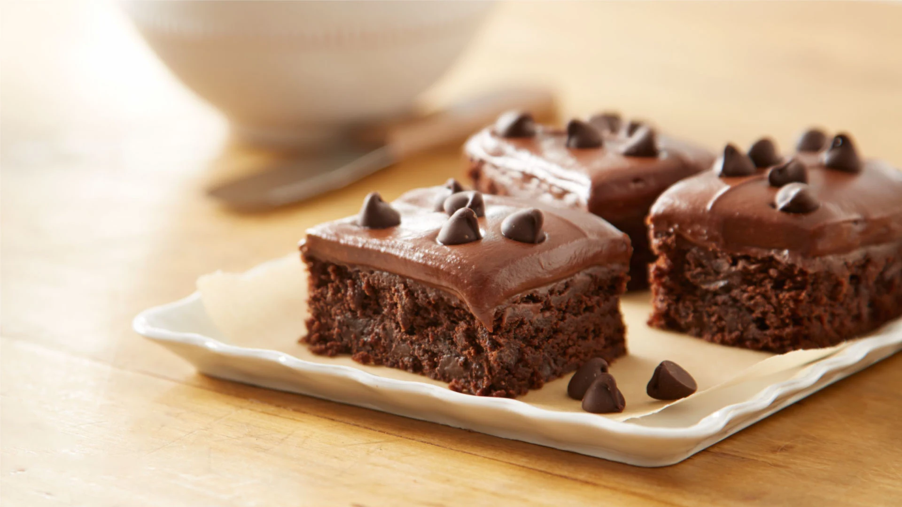

Here is the recipe for the best brownies!

Click here to watch the recipe on youtube!
| Amount Per Serving | |
|---|---|
| Calories | 233 |
Total Fat
| 15g --- 19% |
| Cholesterol | 37mg --- 12% |
| Sodium | 172 mg --- 7% |
| Total Carbohydrates | 25g --- 9% |
| Protein | 3.1g |
| Calcium | 29mg --- 2% |
| Iron | 0.9mg --- 5% |
| Potassium | 88mg --- 2% |